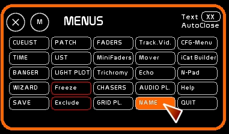
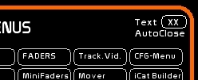

Le mode NAME
Le mode Name permet de transformer l'entrée clavier numérique en entrée de texte. Les raccourcis claviers utilisant des lettres ne sont plus effectifs quand le mode NAME est actif.
La description d'un circuit, ou d'une mémoire ou d'un dock, …, se fait par ce mode.
Pour appeler la fenêtre [NAME]
- clicker [NAME] ou taper [F5]

- taper votre texte. Maximum 24 caractères
- clicker le contenu auquel affecter le descriptif

AutoClose Mode
Une petite case en haut à droite ( marquée XX ) de la fenêtre [MENUS] permet de se mettre en mode AutoClose:
lorsqu'une affectation de nom est faite, la fenêtre est fermée automatiquement.
Si vous désélectionnez AutoClose vous pouvez éditer les noms en série ( renommage de mémoires, de dock , etc….)
